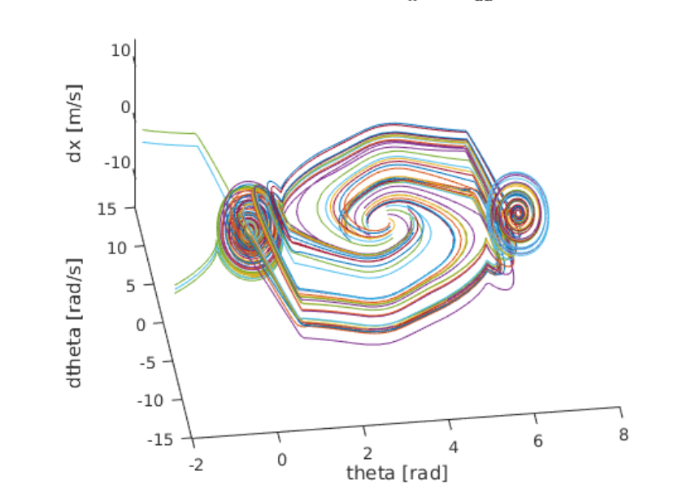
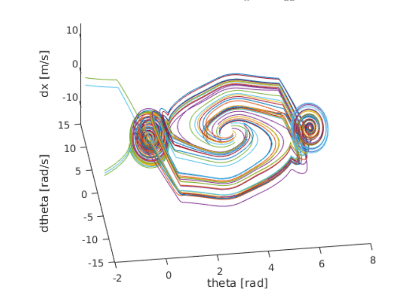

Inverted Pendulum Control
Overview: This project regards dynamics, control, and robot learning techniques to both model and control a cart pole (inverted pendulum) system through the use of a simple simulated dynamics engine. The cart has a mass of 1kg and a horizontal thruster to move in the horizontal x-direction. A pole is attached to the cart with a frictionless joint. It has a mass of 0.1kg and is 1m long (and is infinitely thin).
First, the system is linearized to develop a linear controller to balance the pole in the upright, unstable equilibrium position. Next, the challenge becomes designing a trajectory and controlling the cart pole system to swing the pole from the stable downward position to the unstable upward position.
Source Code: https://drive.google.com/open?id=0B81gni53B9VOam5idHJUcWpSWEU
Solving for the Inverse Dynamics:
The full code for the inverse dynamics can be found in inv_dyn_cartpole.m.I began by constructing a diagram of the entire cart pole system and creating a free body diagram for both the cart and the pole. This will help in finding the correct input for the symbolic dynamics program later on.
Next, I created a transformation matrix to map points and forces between the global coordinate frame (i, j) to the local pole coordinate frame (e_r, e_θ). This matrix can be seen below:
R = [-sinθ -cosθ]
[cosθ -sinθ]
Using this transformation matrix, I then define a symbolic equation for the global position of p (the location of the center of mass of the pole). Note that the variable lcm refers to the length along the pole to the center of mass which in this case is L/2.
cmp = r12 * [lcm 0]'; % location of link COM w.r.t cart
p = [x 0]' + cmp; % global position of pole COM
Now, we can begin the symbolic differentiation! I begin by taking the symbolic derivative of the global position variable, p, using the MATLAB function fulldiff.m (originally provided here: http://www.cs.cmu.edu/~cga/kdc/dynamics-2d/). This function ensures that the chain rule is correctly used to extract the state derivatives from the equation during the derivative.
dp = fulldiff(p, {a, da, x, dx}); % linear velocity of COM
d2p = fulldiff(dp, {a, da, x, dx}); % linear acceleration of COM
d2p = simplify(expand(d2p));
Next, we can begin the inverse dynamics process by solving for the contact force, T, between the pole and the cart by performing a force balance on the pole.
T = mp * d2p - mp * gravity; % where gravity = [0 -g]'
With this contact force, we can now set up our first equation of motion by using Newton’s Second Law of Motion (F = ma) on the cart in the x-direction as shown below. Note: I do this in the x-direction because we are interested in the state variable x and its derivatives.
eqn1 = mc*d2x == F - T(1); % d2x is the 2nd derivative of cart position
eqn1 = simplify(expand(eqn1));
In order to obtain the second equation of motion, I simply perform a torque balance about the center of mass of the pole as shown below. This is to get an E.O.M. containing the second derivative of theta.
T_p = r12'*T; % contact force in the pole frame
T_p = simplify(expand(T_p));
eqn2 = d2a*I == lcm*-T_p(2); % d2a is the 2nd derivative of theta
eqn2 = simplify(expand(eqn2));
We now have two equations and two unknowns (d2x and d2a) which are both the second derivatives of the two main state variables. Perfect! Lastly, I solve the two equations of motion for d2x and d2a as this form will be more convenient when writing a state differential equation solver in MATLAB. The last two lines simply create MATLAB functions to calculate d2x and d2a using known variables (again for convenience).
[ddx, dda] = solve(eqn1, eqn2, d2x, d2a);
matlabFunction(ddx, 'file', 'ddx_fun.m');
matlabFunction(dda, 'file', 'dda_fun.m');
Simulation Using Forward Dynamics:
I decided to stick with MATLAB to create a simulation given that it has some powerful and robust system of differential equations solvers. First I needed to create the structure of my state and its derivative. Given that the cart pole system is a 2 degree-of-freedom system, my state has 4 variables which are the cart’s position, x, and its derivative, dx (or the cart velocity), as well as the angular position of the pole, a, and its derivative, da (or the angular velocity). The state s, and its derivative can be seen below:
s = [x, dx, a, da]'; % s is the state variable
ds = [dx, d2x, da, d2a]'; % ds is the state derivative
We can now solve this system of differential equations given a set of initial conditions using MATLAB’s ode45() function. This is made even easier using the functions ddx_fun.m and dda_fun.m created during the symbolic inverse dynamics process in the first section.
Animating the system’s response to a set of initial conditions is now as simple as creating a draw_cart.m function that takes a state as the input and draws the cart pole system in that state. In order to create a seamless simulation video, I simply looped through the discrete time output of ode45 and plotted each state ensuring a short pause in between iterations to produce a time-realistic simulation. Below is a video of the pendulum starting in the unstable upward position and then falling over with no control:
Simple Linear Control:
In order to find linear control gains to keep this system upright, I began by linearizing the dynamics of the system using a small angle approximation close to the point θ = 0. This approximation simplifies the nonlinear, trigonometric functions sine and cosine quite nicely while also setting the angular velocity term da to zero.
sinθ ≈ θ, cosθ ≈ 1 and da ≈ 0Therefore, we can reduce the first equation of motion from:
lcm*mp*sin(a)*da^2 + d2x*mc + d2x*mp == F + d2a*lcm*mp*cos(a)to...
d2x*mc + d2x*mp == F + d2a*lcm*mpThe second equation of motion can be reduced from:
d2a*(mp*lcm^2 + I) == lcm*mp*(d2x*cos(a) + g*sin(a))to...
d2a*(mp*lcm^2 + I) == lcm*mp*(d2x + g*a)Knowing that our only input to this system u is the horizontal force F provided by the thruster, we can now develop a linear feedback law of the following form:
F = c1*x + c2*dx + c3*a + c4*daHere, our total force that will be applied to the cart is found by summing each gain term multiplied by its respective state variable. Therefore, we can first use a trial and error process to manually find gains that keep the pendulum balanced in the upright position in a pseudo-stable fashion.
Ultimately, I landed on the following gain values which seemed to balance the pendulum above the cart quite nicely with minimal overshoot.
% Manual Control Gains
c1 = 1, c2 = 2, c3 = -20, c4 = -10
Below are graphs of the system’s response to an initial theta value of 20 degrees with all other state variables set to zero (as shown in above video):
Cart Position and Velocity Response
Pole Angle and Angular Velocity Response
LQR Control:
Now the task is to use some known controls method to automatically solve for the gains to be applied to the linear feedback law and thus solve for the input F. In order to accomplish this task, I decided to use a Linear Quadratic Regulator. Just as before, an LQR requires linear dynamics or at least a linear approximation of the system dynamics which were found above.
Given a set of linear dynamic equations that define a system (dx = Ax + Bu), an LQR controller works by attempting to minimize a cost function L(x,u) subject to the state feedback law u = -Kx, where K is a matrix of gain values. The cost function for LQR controller design is as follows:
The cost for a given trajectory is then calculated as the sum of the individual costs from each state along the trajectory (for a discrete system, the cost is k=0 + k=1 + k=2 + …+ k=n).
The Q and R matrices essentially weight the individual quadratic costs of the state and input respectively. Therefore for a state with 4 variables, Q must be a 4×4 matix. Since there is only one input to this system, the force F, the value of R is a single scalar value. In selecting the values for my Q matrix, I wanted to place the heaviest weight on correcting the angle of the pendulum as this ultimately the most crucial state variable to consider when balancing the pole. Knowing that the weights applied to the other state variables would be unity, I decided to set the value of R equal to 1 as well because I did not care too much about its value in balancing the pole.
[1 0 0 0]
Q = [0 1 0 0]
[0 0 5 0]
[0 0 0 1]
R = 1
Finally, I rearranged my linear dynamic equations into the form ds = As + Bu and utilized MATLAB’s lqr() and dlqr() functions to calculate the gain matrix K. The difference between lqr() and dlqr() in MATLAB is that lqr() should be used for continuous time systems (dx = Ax + Bu), while dlqr() should be used for discrete time systems (x(k+1) = Ax + Bu). Out of curiosity, I ended up configuring my A and B matrices that define the system dynamics for both a continuous and discrete time model. I know that modelling this system can never truly be continuous, but given that the derived dynamic equations are continuous, I picked a small step size and calculated the derivative of my state ds using As + Bu and then calculated my next state using a simple first order approximation (s(i+1) = s(i) + ds*dt). It is easy to see that these methods are essentially the same, and to reinforce this notion, I got virtually identical gain values using both methods. The code used to simulate my LQR can be found in cartpole_lin_sim.m. Those gains are shown below:
% Gains from LQR
K = [1.00, 2.31, -32.03, -8.19]
Below are graphs of the system’s response to an initial theta value of 20 degrees with all other state variables set to zero (as shown in above video):
Cart Position and Velocity Response
Pole Angle and Angular Velocity Response
Swing Up Using Non-Linear Control:
In order to test out a control policy to achieve a swing up, we can no longer use the small angle approximation to linearize the dynamics of the system. Instead, we must simulate the full dynamics as presented in the first section and develop a more robust non-linear controller to swing the pole up into a region where we can again assume linear dynamics and thus have the LQR controller take over and finish the job.
My approach follows the idea of momentum and energy conservation. The idea is that we should apply a force to the cart in a direction that will increase the magnitude of the angular velocity. Once the pendulum begins to loose momentum and slow down due to gravity, we will wait for it to stop and switch directions and then apply an opposite force to add energy to the system as the pole swings in the opposite direction. This idea is much like pushing someone on a swing set; you apply a force in the direction of their angular velocity to add energy to the swinging motion. After a bit of trial and error, I determined that my non-linear controller should only be engaged when the angle is between 130 and 230 degrees. These limits proved adequate to propel the pendulum into a “linear region” without adding too much energy to shoot past this region. Next I needed to formulate my conceptual idea for this non-linear controller into an actual mathematical expression, which took the final form of:
% k_x and k_da are gains
% where a_1 is mapped between -pi and pi rather than 0 and 2pi
F = k_x * x + (k_da * da * abs(a_1));
After some testing, it appeared as though this control policy had strong potential to work, but I needed to find optimal k_x and k_da gains to handle a range of possible initial conditions. This process is known as maximizing the "basin of attraction", which is thus the set of initial conditions that lead the system to move to the upright equilibrium.
To do so, I constructed a nested for loop to create various pairings of theta and angular velocity values to simulate a wide variety of initial conditions. More specifically, I varied theta from 130 degrees to 230 degrees with a step size of about 28 degrees while varying the angular velocity from -2 rad/s to 2 rad/s with a step size of 0.5 rad/s. This provided a nice sample trajectory space to gauge the quality of each prospective gain value. Based on the various “trajectory space” plots below, we can start to see how certain gain values lead to more robust, reliable solutions for a wider range of initial conditions. It should be clear that the best k_x and k_da pairing will result in a “trajectory space” figure that minimizes the number of trajectories that wildly spin off towards infinity. Instead, the best pairing should have all trajectories spiral in towards either (theta,dtheta,dx) = (0,0,0) or (theta,dtheta,dx) = (2pi,0,0). After some serious trial and error, I finally landed on the following gains (as they provided the smoothest, fastest swing up motion while also having the “cleanest” trajectory space):
k_x = 1
k_da = -1
Below are the many trajectories for each sampled set of gain values (k_x and k_da):
In order to create a trajectory for the cart pole swing-up, I essentially designed a non-linear “energy inspired” controller to be engaged within a portion of the downward region in order to swing the pendulum up into an approximately linear region where an LQR controller is engaged to balance the pole in the upward position. The code for this controller can be found within cartpole_diff.m which is also the function passed into ode45 to solve the nonlinear dynamic differential equations for the state variables.
A video of my custom trajectory to swing the pendulum from the stable downward position to the unstable upward position and balance it there:
Below are graphs of the system’s response as it undergoes my custom swing-up trajectory (as shown in above video):
Cart Position and Velocity Response
Pole Angle and Angular Velocity Response